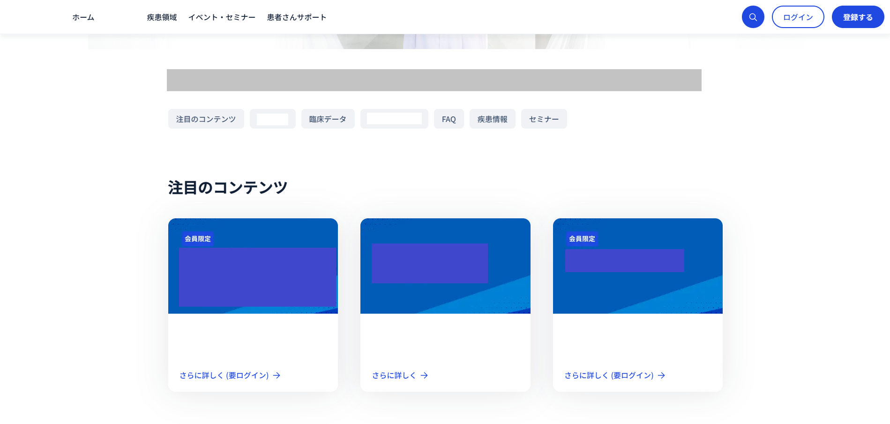
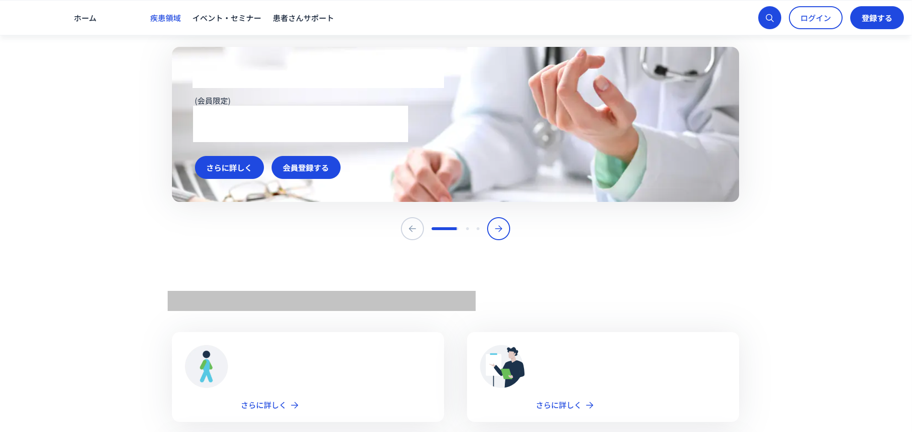
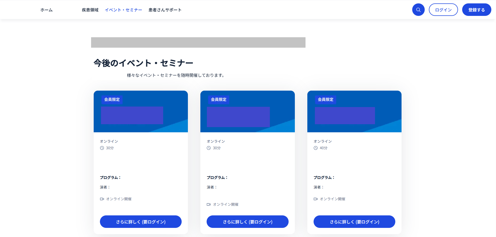
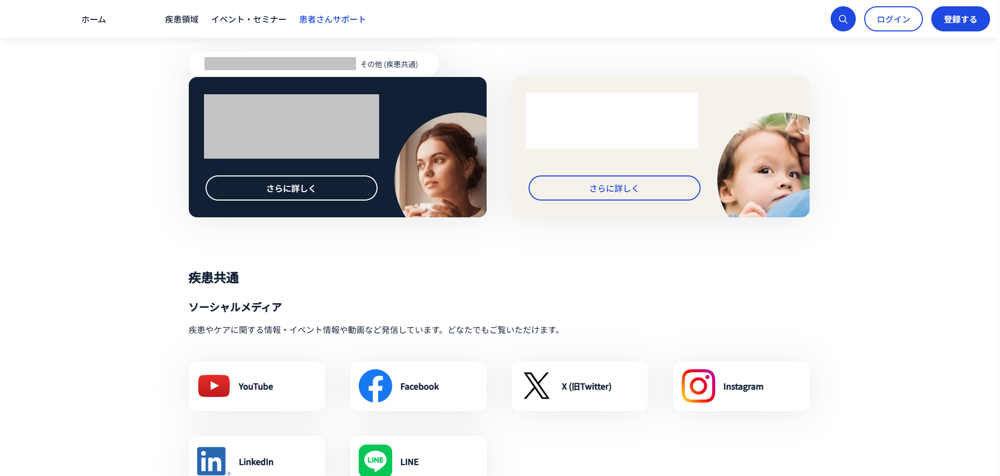

Product Information Page
Built and maintained product information pages using a proprietary CMS, supporting content updates, publishing activities, and quality assurance.
AEM Specialist ・ CMS Operations ・ Website Production
I am a Web Director and CMS Specialist with over seven years of experience supporting enterprise website operations and content management. My experience includes Adobe Experience Manager (AEM), CMS migration projects, website publishing, quality assurance, localization QA, stakeholder coordination, and collaboration with global teams. I have supported corporate, product, disease information, and patient support websites while progressing from team member to project lead.

Built and maintained product information pages using a proprietary CMS, supporting content updates, publishing activities, and quality assurance.

Managed therapeutic area content, ensuring accurate information delivery, localization validation, and content consistency across pages.

Managed seminar and event pages using a proprietary CMS, supporting content publishing, event information updates, localization QA, and release preparation.

Built and maintained patient support content, helping users access healthcare information and support resources.
Due to confidentiality agreements, selected client names, product names, and business-sensitive information have been partially hidden. Screenshots are intended to demonstrate website structure, page layouts, CMS implementation, production activities, project responsibilities, and quality assurance work.